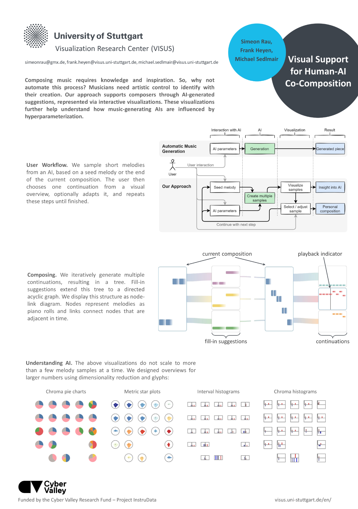

Visual Support for Human-AI Co-Composition


Venue. ISMIR-EA (2021)
Abstract. We propose a visual approach for AI-assisted music composition, where the user interactively generates, selects, and adapts short melodies. Based on an entered start melody, we automatically generate multiple continuation samples. Repeating this step and in turn generating continuations for these samples results in a tree or graph of melodies. We visualize this structure with two visualizations, where nodes display the piano roll of the corresponding sample. By interacting with these visualizations, the user can quickly listen to, choose, and adapt melodies, to iteratively create a composition. A third visualization provides an overview over larger numbers of samples, allowing for insights into the AI's predictions and the sample space.
Acknowledgements. This work was funded by the Cyber Valley Research Fund – Project InstruData.
Link to this page: